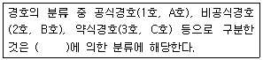
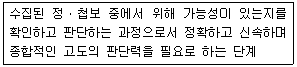

경비지도사-2차(경호학) (2009-11-08 기출문제)
1. 다음 ( )안에 알맞은 것은?

- 대상
- 장소
- 성격
- 경호수준
(정답률: 100%)

2. 경비의 분류 중 총포ㆍ도검ㆍ폭발물 등에 의한 인질, 납치, 난동, 살상 등 사회이목을 집중시키는 중요사건을 예방ㆍ경계ㆍ진압하는 경비활동은?
- 치안경비
- 특수경비
- 혼잡경비
- 중요시설경비
(정답률: 84%)
3. 근접도보경호 임무수행방법에 관한 설명으로 옳지 않은 것은?
- 이동속도와 경호원의 보폭은 경호대상자의 건강상태, 체력, 주위상황에 따라 적절하게 조절한다.
- 이동전 경호대상자에게 이동로, 이동시간, 경호대형 등은 보안유지를 위해 알려주지 않는다.
- 복도, 도로, 계단 등을 이동시 우발상황에 대비한 여유공간 확보를 위해 통로의 중간을 이용한다.
- 위험에 노출되는 정도를 최소화하기 위해 단거리 직선통로를 이용하고 주통로, 예비통로와 비상대피로를 적절히 선정한다.
(정답률: 100%)
4. 다음은 사전경호활동 중 어느 단계에 관한 설명인가?

- 예견단계
- 인식단계
- 조사단계
- 무력화단계
(정답률: 91%)
5. 경호 호신장비에 관한 설명으로 옳지 않은 것은?
- 가스총이나 가스봉은 총기에 준하지 않으므로 생산, 소지, 관리에 있어서 총기보다는 안전관리의 정도가 약하다.
- 청원경찰이 경봉이나 가스분사기, 가스봉 이외의 곤봉 등을 휴대하는 것은 위법으로 허용되지 않는다.
- 우리나라 경비원은 특수경비원을 제외하고는 호신용 총이나 칼을 소지할 수 없다.
- 경비업자가 경비원으로 하여금 분사기를 휴대하여 직무를 수행하게 하는 경우에는 총포ㆍ도검ㆍ화약류등단속법에 의하여 미리 분사기의 소지허가를 받아야 한다.
(정답률: 91%)
6. 경호의 활동원칙에 관한 설명으로 옳지 않은 것은?
- 우발상황 발생시 경호대상자를 안전한 곳으로 대피시키고, 공격적 행동보다 방어위주의 엄호행동이 요구된다.
- 행차코스는 원칙적으로 비공개로 하여야 하고, 행사장소는 가급적 변경하지 않는 것이 효율적이다.
- 자기담당구역에서 일어나는 사태에 대해서는 자신만이 책임지고 해결해야 한다.
- 경호요원은 은밀하고 침묵 속에서 행동하고 행동반경을 경호대상자의 신변을 엄호할 수 있는 곳에 한정시킨다.
(정답률: 100%)
7. 우리나라 경호공무원에 관한 설명으로 옳은 것은?
- 경호공무원이 신체, 정신상의 이상으로 인하여 6개월 이상 직무를 감당하지 못할 만한 지장이 있을 때에는 직권면직의 대상이 된다.
- 소속공무원이 경호처의 직무와 관련된 사항을 발간 기타의 방법으로 공표하고자 하는 때에는 미리 대통령실장의 허가를 받아야 한다.
- 경호공무원의 유족은 국가유공자등 예우 및 지원에 관한 법률에 의한 보상의 대상이 되지 아니한다.
- 경호처장의 제청에 의하여 검찰총장이 지명한 경호공무원은 일정 범위 내에서 사법경찰관리의 직무를 행할 수 있다.
(정답률: 93%)
8. 경호임무수행 시 행사장 내부 담당자의 임무에 해당되지 않는 것은?
- 차량공격 및 직시건물에 대한 안전조치를 강화한다.
- 행사장 내 단상, 천장, 각종 집기류를 점검한다.
- 경호대상자 동선 및 좌석위치에 따른 비상대책을 강구한다.
- 경호대상자의 휴게실 및 화장실에 대한 안전점검을 실시한다.
(정답률: 100%)
9. 대통령경호안전대책위원회에 관한 설명으로 옳지 않은 것은?
- 대통령 등 경호대상에 대한 경호업무를 수행함에 있어 관계부처의 책임을 명확하게 하고, 협조를 원활하게 하기 위하여 경호처에 둔다.
- 위원회는 위원장과 부위원장 각 1인을 포함한 20인 이내의 위원으로 구성한다.
- 위원장은 대통령실장, 위원은 대통령령이 정하는 관계부처의 공무원이 된다.
- 위원회의 구성 및 운영에 관하여 필요한 사항은 대통령령으로 정한다.
(정답률: 79%)
10. 행사장 현장답사 시 고려해야 할 사항으로 해당되지 않는 것은?
- 행사장 진입로, 주통로 등을 고려하여 기동수단 및 승ㆍ하차지점을 확인한다.
- 행사장 통제범위 및 경호원 동원 범위를 판단한다.
- 행사장 출입자에 대한 시차입장계획을 수립한다.
- 행사장의 특성, 구조, 시설 등에 대한 취약여건을 판단한다.
(정답률: 84%)
11. 의전서열에 관한 설명으로 옳지 않은 것은?
- 지위가 비슷한 경우 연소자보다 연장자가, 내국인보다 외국인이 상위서열이다.
- 기혼부인 간의 서열은 남편의 지위에 따른다.
- 공식서열은 신분별 지위에 따라 인정된 서열로서, 국제적으로 동일하게 적용된다.
- 비공식서열의 경우 원만하고 조화된 좌석배치를 위해서 서열 결정상의 원칙은 다소 조정될 수도 있다.
(정답률: 100%)
12. 미국 대통령이 방한 행사 중 사전에 계획된 국립현충원 행사를 마치고 예정에 없던 한강 고수부지에서 산책을 하였을 때의 경호분류 순서로서 옳은 것은?
- 갑호경호, 비공식경호, 공식경호
- 갑호경호, 공식경호, 비공식경호
- 을호경호, 공식경호, 비공식경호
- 직접경호, 비공식경호, 행사장경호
(정답률: 100%)
13. 사전경호활동 준비 시 고려해야 할 사항으로 옳지 않은 것은?
- 경호대상자에 대한 신상 및 의료자료는 사생활 보호차원에서 파악할 필요는 없다.
- 경호활동 계획은 주로 행사 주최 측에서 작성한 행사계획에 근거하여 작성한다.
- 행사장소와 주변시설에 대한 자료를 이용하여 행사장에 대한 잠재적 위해요소를 판단한다.
- 각 근무지별로 부여된 임무수행을 위해 점검리스트를 작성하고, 근무지별 세부활동계획을 수립한다.
(정답률: 알수없음)
14. 경호활동시 안전검측 실시방법으로 옳지 않은 것은?
- 검측실시 후 현장 확보상태에서 지속적인 안전유지를 한다.
- 보일러실이나 변전실, 유류나 가스저장 시설과 같은 취약시설은 안전검측이 필수적이며, 행사시작 전후 불필요한 인원을 통제한다.
- 설계도 등의 자료를 비교하여 방의 통로, 밀폐된 공간, 천장내부 등을 세밀히 검측한다.
- 검측의 순서는 경호대상자의 이동로를 먼저 실시하고, 장시간 체류하는 곳은 나중에 실시한다.
(정답률: 100%)
15. 사전경호활동 시 시간사용계획, 관계관회의 시 주요 지침사항, 예상문제점, 참고사항 등을 계획하고 임무별 진행사항 등을 점검하는 담당자는?
- 출입통제 담당자
- 작전 담당자
- 안전대책 담당자
- 승ㆍ하차 및 정문 담당자
(정답률: 90%)
16. 경호조직의 원칙에 관한 설명으로 옳지 않은 것은?
- 경호는 업무의 성격상 기관단위 작용으로 이루어지지 않고 개인단위 작용으로 이루어진다.
- 경호업무가 긴급성을 요하고, 모순과 중복 및 혼란을 없애기 위해 지휘단일성이 요구된다.
- 상하 계급 간에 일정한 관계에 의해 책임과 업무의 분담이 이루어지고, 명령과 복종의 지위와 역할의 체계가 통일되어야 한다.
- 완벽한 경호를 위해 국민의 협력이 필요하고, 모든 방법을 강구하여 국민의 역량을 결합하기 위해 노력해야 한다.
(정답률: 91%)
17. 경호계획수립 시 유의해야 할 사항으로 옳지 않은 것은?
- 사전현지답사를 실시하여 완벽한 계획이 되도록 한다.
- 예비 병력을 확보하는 등 융통성 있는 계획을 수립한다.
- 수립된 계획의 실천추진사항을 지속적으로 확인해야 하며, 일관된 업무수행을 위해 수립된 계획은 변경하지 않는다.
- 검측 및 통신장비, 차량 등의 동원계획을 검토한다.
(정답률: 100%)
18. 경호업무수행 시 출입자 통제대책으로 옳지 않은 것은?
- 행사장 출입 인원 및 차량에 대해 인가 여부를 확인한다.
- 지정된 출입통로를 사용하도록 하고 기타 통로는 폐쇄한다.
- 물품보관소를 운용하여 출입자의 위해가능 물품은 별도 보관한다.
- 행사규모에 따라 참석대상별 출입통로를 구분하고 위해요소 분산을 위해 통로를 가급적 여러 개 두도록 한다.
(정답률: 100%)
19. 응급환자 발생에 따른 처치를 실시할 때 지켜야 할 원칙으로 옳지 않은 것은?
- 부상자의 상태를 확인하고 편안한 자세를 유지하도록 한다.
- 부상자의 생사에 대한 판정은 하지 않는다.
- 동원가능한 의약품을 최대한 사용하여 신속히 처치한다.
- 병원에 이송되기 전까지 부상자의 2차쇼크를 방지하고 생명을 유지하도록 한다.
(정답률: 93%)
20. 우발상황발생 시 상황전달에 관한 설명으로 옳지 않은 것은?
- 우발상황의 발생위치나 위험의 종류, 성격 등을 전달한다.
- 육성 또는 무전기를 통해 다른 근무자들이 상황을 인지할 수 있도록 신속히 전달한다.
- 위해기도자가 공범이 있는 경우를 예상하고 제2공격에 대비한 상황도 신속하게 전달한다.
- 위해기도자는 순간적으로 공격할 수 있기 때문에 위해자와 최근거리에 있는 경호원이 전달해야 한다.
(정답률: 100%)
21. 대통령등의경호에관한법률상 경호등급 및 경호구역 지정에 관한 설명으로 옳은 것은?
- 경호업무의 수행에 필요하다고 판단되는 경우 경호처장은 대통령의 승인을 받아 경호구역을 지정할 수 있다.
- 경호등급을 구분하여 운영하는 경우에는 국가정보원장, 국방부장관 및 경찰청장과 미리 협의하여야 한다.
- 위해요소의 원천적 봉쇄를 위해 경호구역은 가능한 넓게 지정하도록 한다.
- 경호등급과 관련하여 필요한 사항은 대통령실장과 협의하여 경호처장이 따로 정한다.
(정답률: 34%)
22. 안전검측 원칙에 관한 설명으로 옳지 않은 것은?
- 책임구역은 명확히 구분하고 안에서 밖으로, 위에서 아래로, 우에서 좌로 체계적으로 실시한다.
- 통로보다는 양 측면, 아래보다는 높은 곳, 의심나는 곳은 반복해서 실시한다.
- 안전검측은 은밀하게 실시하고, 가능한 현장 확보상태에서 점검하고 지속적인 안전유지를 해야 한다.
- 장비를 이용하되 오감을 최대한 활용한다.
(정답률: 100%)
23. 경호임무 수행단계 중 평가단계에 해당되는 것은?
- 행사장에 대한 위해정보수집과 분석
- 경호행사 전반에 대한 상황의 판단
- 행사장의 사전현장답사에 의한 안전확보의 실시
- 경호임무의 계획과 실행 간의 문제점 분석
(정답률: 100%)
24. 중첩경호에 관한 설명으로 옳지 않은 것은?
- 경호대상자에 대한 위해요소를 최소화하기 위하여 행사장을 중심으로 일정간격을 유지하여 중첩보호막 또는 경계선을 설치ㆍ운용하는 것이다.
- 행사장에 참석하는 경호대상자를 중심으로 위해요소의 중복차단과 조기경보를 목적으로 한 지역방어 개념이다.
- 중첩경호는 행사장을 중심으로 경호의 행동반경을 거리와 지역을 고려하여 설정한 것이다.
- 미국 비밀경호국의 중첩경호는 근접과 중간경호보다 외곽경호에 더 비중을 두고 있다.
(정답률: 93%)
25. 조선시대 국왕의 호위 및 궁궐숙위를 담당하던 기관(관청)이 아닌 것은?
- 순군만호부(巡軍萬戶府)
- 내금위(內禁衛)
- 겸사복(兼司僕)
- 호위청(扈衛廳)
(정답률: 93%)
26. 근접경호작용에 관한 설명으로 옳지 않은 것은?
- 근접경호는 노출성, 방벽성, 기만성, 기동 및 유동성, 방호 및 대피성 등의 특성을 갖고 있다.
- 행사시 각종 위해요소로부터 경호대상자의 신변보호를 위해 기동 간 및 행사장에서 실시하는 호위활동이다.
- 경호대상자가 행사장에 도착하기 전에 현장조사를 실시하고 효과적인 경호협조와 준비를 하는 활동이다.
- 근접경호요원은 위해공격에 대비하여 제반사항들을 철저히 계획하고, 우발상황 발생 시 피해를 최소화 하겠다는 태도로 임무를 수행하여야 한다.
(정답률: 91%)
27. 경호업무 수행 중 우발상황 대응 시 고려해야 할 사항으로 옳지 않은 것은?
- 경호원과 위험발생지점과의 거리
- 우발상황의 종류와 성격
- 행사장 참석 인원의 수 및 대응소요시간
- 제2공격 대비를 위한 위해기도자 색출
(정답률: 알수없음)
28. 각국 공경호의 주체와 객체에 관한 설명으로 옳은 것은?
- 대한민국 경찰청 경호과에서는 대통령권한대행, 대통령후보자와 그의 배우자 및 자녀의 경호를 담당한다.
- 일본 천황의 경호기관은 동경도 경시청 직할에 설치되어 있는 경호안전국이다.
- 미국의 비밀경호국은 부통령, 국무성 장ㆍ차관 및 외국대사 등의 경호와 의전에 대한 경호업무를 주관하고 있다.
- 독일은 대통령과 수상의 경호를 동일 기관에서 담당한다.
(정답률: 60%)
29. 경호임무 시 사전예방 활동의 기본요소 중 경호대상자는 물론 인원, 문서, 시설, 지역 및 통신까지 관련된 모든 것을 위해자로부터 차단하는 것을 무엇이라 하는가?
- 보안활동
- 정보활동
- 협조체제
- 안전대책
(정답률: 93%)
30. 차량기동 간 경호 시 검토할 사항이 아닌 것은?
- 차량대형의 결정
- 주위상황과 군중의 성격과 수
- 행ㆍ환차로의 선택
- 비상대피소 및 최기병원 선정
(정답률: 알수없음)
31. 감염증에 의한 쇼크에 해당되는 것은?
- 출혈성 쇼크
- 저체액성 쇼크
- 패혈성 쇼크
- 호흡성 쇼크
(정답률: 91%)
32. 우발상황의 대응순서가 바르게 연결된 것은?
- 인지 → 경고 → 방벽형성 → 대적 및 제압 → 방호 및 대피
- 인지 → 경고 → 방벽형성 → 방호 및 대피 → 대적 및 제압
- 인지 → 방벽형성 → 경고 → 대적 및 제압 → 방호 및 대피
- 인지 → 방벽형성 → 경고 → 방호 및 대피 → 대적 및 제압
(정답률: 93%)
33. 유형별 응급환자에 대한 조치사항으로 옳지 않은 것은?
- 두부손상이 의심되면 상체를 높이고, 구토 등 이물질이 있는 경우 옆으로 눕힌다.
- 뇌일혈의 경우 환자의 머리와 어깨를 높혀 주고, 목의 옷을 느슨하게 하고 찬물수건이나 얼음주머니를 머리에 대어준다.
- 약품화상의 경우 물로 상처를 씻어내고 감염을 예방하도록 한다.
- 독사교상의 경우 상처부위의 위쪽은 묶고, 상처부위를 심장보다 높게 하여 이송한다.
(정답률: 75%)
34. 경호작용의 기본 고려요소 중 계획수립 단계에 관한 설명으로 옳지 않은 것은?
- 예기치 않는 변화의 가능성 때문에 경호임무를 계획할 때에는 융통성 있게 수립되어야 한다.
- 책임구역과 책임자를 지정하고 계획서 도면에 보안을 위하여 책임한계를 명시하지 않는다.
- 안전에 영향을 미칠 수 있는 악천후 기상 및 가능성 있는 위협 등에 대비하여 예비 및 우발계획을 준비한다.
- 해양지역 행차 시는 육ㆍ해ㆍ공의 입체적 경호경비가 이루어지도록 계획을 수립한다.
(정답률: 100%)
35. 경호경비원의 복제기준에 관한 설명으로 옳지 않은 것은?
- 대통령실 경호처에 근무하는 경찰공무원의 복제에 관하여는 따로 경찰청장이 정한다.
- 경비업자는 제복외의 복장을 착용하는 경비원을 동일한 장소에 2인 이상을 배치할 경우 동일한 복장을 착용하게 하여야 한다.
- 경비업자가 경비원의 제복을 정한 때에는 주된 사무소를 관할 경찰서장에게 그 형식 및 색상을 확인할 수 있는 사진을 제출하여야 한다.
- 대통령실장이 필요하다고 인정하는 경우 경호처 직원에게 제복을 지급할 수 있다.
(정답률: 54%)
36. 근접경호 기법 중 도보대형형성 시 고려해야 할 사항에 해당되지 않는 것은?
- 인적 취약요소와의 이격도
- 경호책임자와 근접경호요원의 취향
- 참석자의 성향과 행사장 주변 건물의 취약성
- 행사장 사전예방경호 수준
(정답률: 92%)
37. 특수경비원의 무기관리에 관한 설명으로 옳지 않은 것은?
- 무기를 지급받은 특수경비원은 매주 1회 이상 무기를 손질해야 한다.
- 무기 즉시회수 대상에는 형사사건 조사 중인 자, 사의를 표명한 자, 정신질환자 등이 있다.
- 탄약의 출납은 소총 1정당 15발 이내, 권총 1정당 7발 이내로 하되, 오래된 탄약을 우선 출납한다.
- 대여받은 무기를 빼앗기거나 분실ㆍ도난 또는 훼손된 때에는 지방경찰청장이 정하는 바에 의하여 그 전액을 배상해야 한다.
(정답률: 86%)
38. 경호정보작용에 관한 설명으로 옳지 않은 것은? (문제 요류로 실제 시험에서는 1, 3번이 정답처리 되었습니다. 여기서는 1번을 누르면 정답 처리 됩니다.)
- 정확성, 안전성, 적시성의 요건을 구비해야 한다.
- 경호대상자의 신변안전을 위협하는 취약요소를 사전수집, 분석 및 예고하는 예방경호를 수행하는 업무이다.
- 경호대상자의 행사일정과 경로 및 이동방법 등을 노출시키지 않는 사전예방작용이다.
- 경호작용의 원천적 사전지식을 생산, 제공하는 것이다.
(정답률: 100%)
39. 일반적인 탑승예절에 관한 설명으로 옳지 않은 것은?
- 기차의 경우 두 사람이 나란히 앉는 좌석에서는 창가 쪽이 상석이고, 통로 쪽이 말석이다.
- 비행기의 경우 상급자가 마지막으로 타고, 먼저 내리는 것이 순서이다.
- 엘리베이터의 경우 안내하는 사람이 있을 때는 상급자가 먼저 타고, 먼저 내린다.
- 에스컬레이터는 하급자가 먼저 올라가고, 내려올 때는 상급자가 먼저 내려온다.
(정답률: 93%)
40. 경호조직의 특성과 원칙에 관한 설명으로 옳지 않은 것은?
- 경호조직은 기구단위, 권한과 책임 등이 경호업무의 목적달성에 기여할 수 있도록 통합되어야 한다.
- 경호장비의 과학화와 이를 지원하기 위한 행정업무의 자동화, 컴퓨터화 등 과학기술의 도움으로 기동성을 갖춘 경호조직을 요구한다.
- 상하계급 간 일정한 관계가 이루어져 책임과 업무의 분담이 이루어지고 명령과 복종의 지위와 역할의 체계가 통일되어야 한다.
- 일반적으로 정부조직은 법령주의와 공개주의 원칙에 따르지만, 경호조직에서는 비밀문서로 관리하거나 배포의 일부제한으로 비공개로 할 수 있다.
(정답률: 90%)